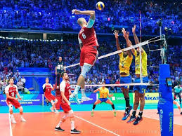

CVC invierte 300 millones de dólares para impulsar a la Federación
Internacional de Voleibol

CVC Capital Partners suma y sigue en la industria del deporte. El
fondo de inversión ha firmado un acuerdo con la Federación
Internacional de Voleibol (Fivb) para impulsar el crecimiento de
esta disciplina, mejorar la experiencia de los jugadores y los
aficionados, y optimizar su rendimiento comercial. Los términos
económicos de la alianza no han trascendido, pero según Sky News, la
firma prepara una inversión de 300 millones de dólares (248 millones
de euros) para contribuir al crecimiento del voleibol.
Como parte del acuerdo, se creará la entidad comercial Volleyball
World, cuya mayoría accionarial está en manos de la Fivb. Esta
compañía trabajará con las federaciones nacionales y ligas con el
objetivo de aumentar la popularidad de este deporte a través de las
inversiones que realice la firma de inversión y la Federación. Esta
entidad será la responsable de comercializar los eventos de voleibol
y vóley playa, incluyendo los mundiales, los clasificatorios para
los Juegos Olímpicos y la Volleyball Nations League.
La alianza se centrará en la venta de derechos audiovisuales, la
experiencia del fan, el data y las oportunidades digitales que
puedan surgir, así como el crecimiento de los ingresos comerciales y
asociados a la organización de competiciones.